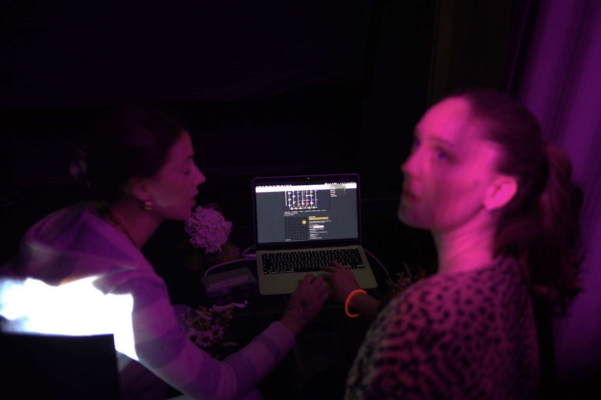
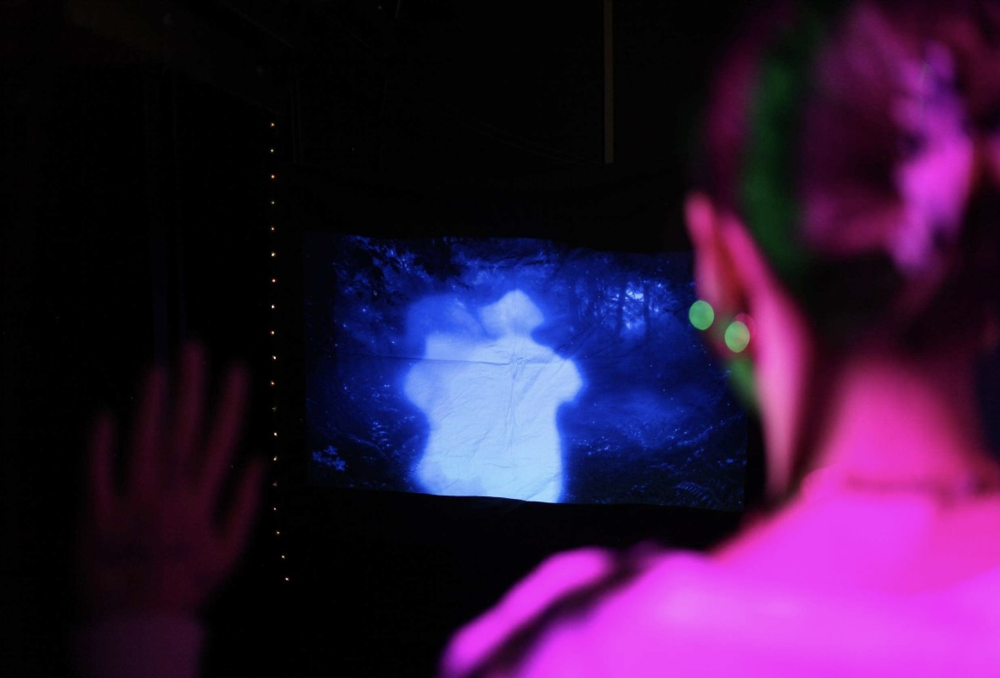
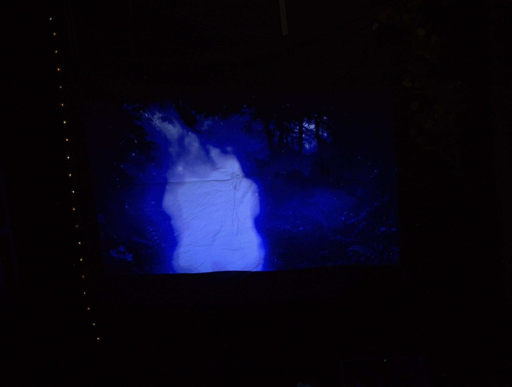
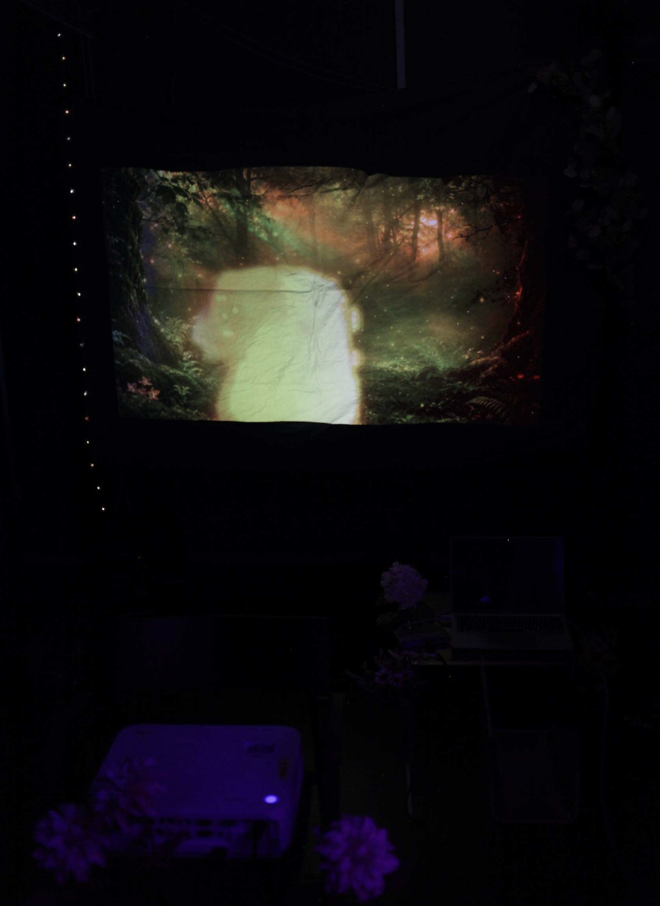

Sara Vendel
Group 6
Our project is welcoming you into a magical forest where your aura comes to life. I was inspired by an event that was taking place in Stockholm right before this assignment called Harmoni Expo. It was filled with supernatural practices like tarot card readings and aura photography. I took an aura photo and when me and Emmy brainstormed about what we wanted to do, we liked the idea of seeing one's aura. The forest theme came to us when we both liked the concept of forest rave, or even forest fairy rave. With that we also added harmonic sounds that came to life while moving in front of the webcam, seeing one’s aura and energy glitter in the movement as well. The more you stay and look, the more you find in the magical forest.
Forest Fairy Rave




